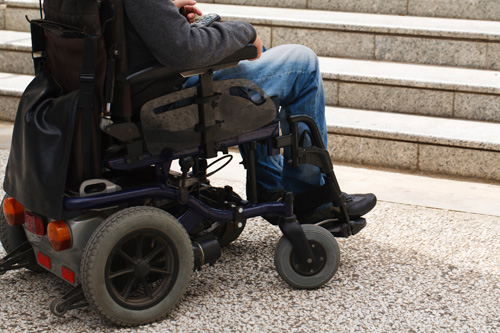

evolucion del termino "discapacidad"
La discapacidad es un concepto que ha sido entendido de maneras diferentes. Las percepciones sobre la discapacidad han evolucionado significativamente en las últimas décadas. Para apreciar lo que es la discapacidad, es importante estar al tanto de las diferentes interpretaciones propuestas por los diferentes modelos. La percepción que la sociedad tenga de la discapacidad ocasiona un impacto muy fuerte en el tipo de respuesta que se da a los temas de discapacidad y a la manera en que las personas con discapacidad son consideradas.
Modelos individuales de discapacidad
Durante mucho tiempo la discapacidad ha sido considerada como un problema individual solamente abordable desde el punto de vista benéfico o médico. El modelo benéfico mira a las personas con discapacidad con lástima y requiere de la generosidad para ayudarlas, mientras que el modelo médico se ciñe a la rehabilitación, “restaurar el funcionamiento normal” o servicios especiales para “reparar el roto”.
Aunque estos dos modelos se diferencian en el espíritu y la respuesta propuesta, los dos tienen una raíz común: la persona con discapacidad es vista como un problema a resolver y la responsabilidad de la discapacidad recae en la persona que debe ser “reparada”. Este punto de vista iguala discapacidad con deficiencia y “dentro de este paradigma la exclusión social se considera esencialmente como el resultado de las limitaciones impuestas por las deficiencias”
Modelo social de la discapacidad: “es la sociedad la que nos perjudica, no nuestras discapacidades”
El modelo social de la discapacidad nace en los años 70 en el Reino Unido y los EE.UU. como crítica a las interpretaciones anteriores. Propone una interpretación que es radicalmente diferente afirmando que las personas con discapacidad están en desventaja, no por sus características individuales sino como consecuencia de las limitaciones que las barreras ambientales y externas les imponen.
La discapacidad es, por tanto, una consecuencia de cómo está organizada la sociedad. De acuerdo con esta formulación, la discapacidad es un problema de discriminación y exclusión social. Este modelo reconoce implícitamente que la discapacidad es parte de la vida, y requiere diferentes respuestas y prioridades. Al mismo tiempo, reconoce la necesidad de tener en cuenta los aspectos médicos y la eliminación de las barreras que impiden la plena participación de personas con discapacidad y decidir plenamente sobre el control de sus propias vidas.
Definiendo la discapacidad
El modelo social de la discapacidad pone de relieve el hecho de que la discapacidad es un concepto contextual y en evolución. Desde esta perspectiva, el Proceso de Creación de la Discapacidad ofrece la siguiente definición: “Una situación de discapacidad corresponde a la realización parcial o a la no realización de los hábitos de vida“.
La Convención sobre los Derechos de las Personas con Discapacidad (CDPD) establece en su artículo 1º: "Las personas con discapacidad incluyen a aquellas que tengan deficiencias físicas, mentales, intelectuales o sensoriales a largo plazo que, al interactuar con diversas barreras, puedan impedir su participación plena y efectiva en la sociedad, en igualdad de condiciones con las demás”.
Estas definiciones se centran en lo que genera una situación de discapacidad y nos proporcionan criterios rigurosos y universales para determinar quiénes son las personas con discapacidad. La elección de una definición de discapacidad afecta mucho a la identificación de las personas con discapacidad y a la tasa de prevalencia de la discapacidad en un país determinado.
Definir la discapacidad está en el centro de importantes apuestas de política pública: en efecto, los criterios y niveles de discapacidad dictados por un Estado para definir la discapacidad están muy influenciados por la capacidad o voluntad del propio Estado para atender las demandas de la población identificada a través de políticas sociales adecuadas.
¿Qué terminología se debe utilizar?

El vocabulario que a menudo se utiliza es un reflejo de cómo se entiende la discapacidad. El Proceso de Creación de la Discapacidad utiliza la expresión “persona en situación de discapacidad” para enfatizar el hecho de que la discapacidad no debe ser confundida con la persona. Al contrario, se trata de una noción relativa que resulta de una situación en la que los factores personales interactúan negativamente con el entorno.
La Convención sobre los Derechos de las Personas con Discapacidad (CDPD) se refiere a “personas con discapacidad”, una expresión más común, que resalta en primer lugar a la persona, al contrario que el término “discapacitados”, vocablo a extinguir ya que reduce al individuo a su discapacidad.